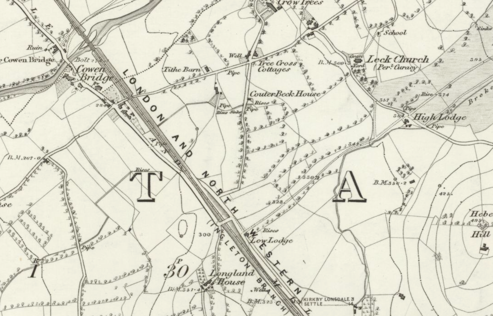
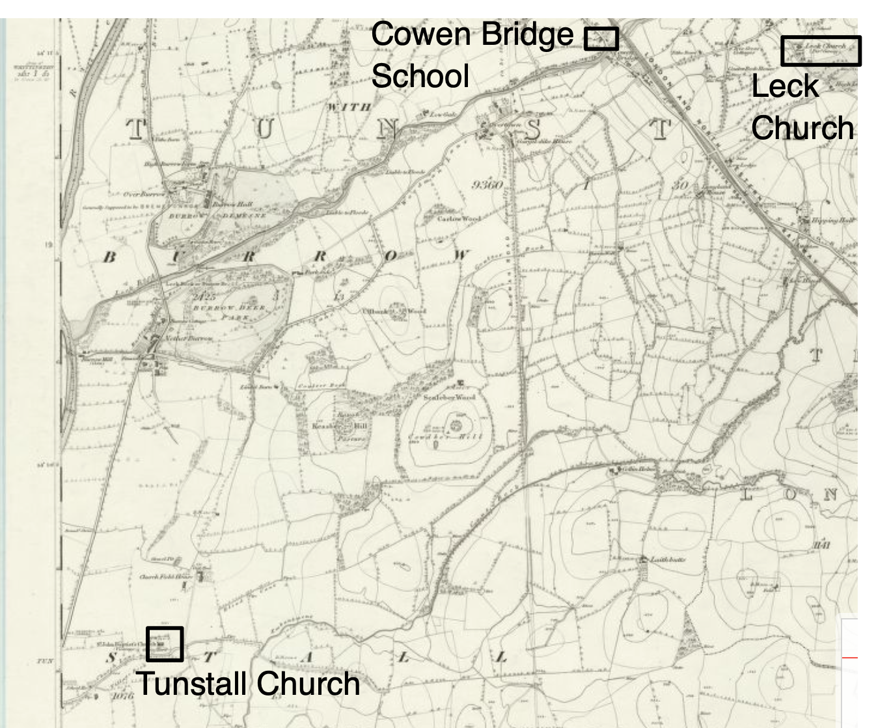

The School for Clergymen’s Daughters, Cowen Bridge#
In the biography of Currer Bell, née Charlotte Brontë, published in Sharpe’s London magazine in 1855., the author described how Charlotte Brontë was “placed at the clergy school Cowan Bridge .., [thence] described to the life in “Jane Eyre.”
The proposal to open the school, along with a request for offering support by subscription and an invitation to recommend potential entrants to the new school, was widely syndicated in northern newspapers in November 1823.
A note on the spelling…
A look at the sign as you enter the hamlet today shows the spelling today to be Cowan Bridge. But on the Ordnance Survey map of 1847, and in many contemporary publications, the spelling was Cow__e__n Bridge. I have tended to use the spelling as it appeared in each printed work.

School for Clergymen’s Daughters, November 1823
Lancaster Gazette - Saturday 22 November 1823 and widely syndicated in other local papers.
SCHOOL FOR CLERGYMEN’S DAUGHTERS.
IT has been a subject of regret amongst the friends of the Established Church, that the provision for a considerable portion of the Clergy is so inadequate to their support: and whether we consider the happiness of individuals, or the welfare or parishes and congregations, few projects can more strongly recommend themselves to our benevolence, than those which aim at the alleviation of this evil. Efforts of this nature have long been made with considerable success. The salutary effects of Queen Anne’s Bounty are felt throughout the kingdom. The Corporation of the Sons of the Clergy, and the Clergy Orphan Society, are the means of relieving much misery: while, in most or our dioceses, Clerical Charities have been established, and are successful in operation.
In addition to the means already adopted, of administering to the wants of the poorer Clergy, a School is about to be opened for the Education of their Daughters.
Lancaster was fixed upon for the situation: but the treaty for the purchase of a house having failed, the attention was directed to other quarters; and a very desirable property bas been purchased at Cowen Bridge, in the parish of Tunstall The property will be immediately transferred to Trustees; thereby to guard against the uncertainties of the life of the projector; and to perpetuate the establishment for the benefit of those for whom it is designed.
The house will be enlarged and altered for the accommodation of sixty pupils: each girl is to pay £14 a year (half in advance) for clothing, lodging, boarding, and educating; and £1 entrance towards the expense of books, &c. The education will be directed according to the capacities of the pupils, and the wishes of their friends. In all cases, the great object in view will be their intellectual and religious improvement; and to give that plain and useful education, which may best fit them to return with respectability and advantage to their own homes, or to maintain themselves in the different stations of life to which Providence may call them. If a more liberal education is required for any who may be sent to be educated as teachers and governesses, an extra charge will probably be made.
In cases where the parents are unable to pay the whole of the annual sum of £14 (which unhappily must frequently occur) it id hoped that more affluent parishioners, and other friends who are locally interested in a Clergyman, will gladly avail themselves of this method of administering to his wants.
It is calculated, that the sum of £14 will so far defray the whole annual expenditure, as not to require more than £200 or £250 a year, to be raised by subscriptions.
The school is open to the whole kingdom. Donors and Subscribers will of course gain the first attention in the recommendation of pupils: and every effort will be made to confine the benefits of the school to the really necessitous clergy; and especially to those, who are the most exemplary in their life and doctrine.
About £1000 is required to cover the purchase, the alterations, and the furnishing of the house. One Governess is already engaged; and as little repair is necessary in the present apartments, the School will be opened in January; it will probably be ready to receive the whole number proposed, in March or April.
The purchase has been ventured upon in a confident expectation that the plan will recommend itself to the benevolent members of oor Church, and ensure their liberal assistance. It were indeed to be wished, that the Clergy could be relieved from the necessity of accepting such aid as is now proposed to them: but until that object is effected, it is clearly incumbent on the friends of religion, to do what they can in behalf of a class of persons, on whose welfare so much depends that of the community at large.
Donations and subscriptions will be thankfully received by the Rev. Wm. Carus Wilson, M. A. Vicar of Tunstall, near Kirkby Lonsdale; who will be happy to give farther particulars, and to receive recommendations of proper pupils. He may be addressed under cover to W. W. Carus Wilson, Esq. M.P. Casterton Hall, Kirkby Lonsdale.
(Annual subscriptions will be made due on the first or next January.)
Tunstall Vicarage, November 1st, 1823.
[A list of donations by name and amount is then provided.]
Though the school continued, its physical location changed in 1835, with a move to Casterton.
Consecration of Casterton Chapel, October 1833
Lancaster Gazette - Saturday 12 October 1833
CONSECRATION OF CASTERTON CHAPEL
This Chapel has been built, as well for the convenience of the township of Casterton, containing a population of between 300 and 400, situated at a distance from the parish Church, only township, except Lupton, in the parish of Kirkby-Lonsdale, without a Chapel; is for the convenience of the Clergy Daughters’ School, which is now removed from Cowen Bridge to Casterton. The confined and public situation of the Cowen Bridge premises, and the inconvenient distance from Leck Chapel, added to other weighty reasons, have led to the removal of the School. The present building affords double the accommodation of the old, under much better arrangements; and standing upon two acres of land, has the advantage of spacious play grounds: while the close contiguity of the new Chapel will be favourable to the regular attendance of the whole household on public worship.
The applications for admission into the School have of late been so numerous, that many have been obliged to be negatived; and it is a satisfaction that the new arrangement have allowed of the number being raised from 90 to 100.
The digging of the foundations commenced on the 11th of last February. The pupils entered on the new premises the 23d of last month; and the Chapel was presented to the Lord Bishop of the Diocese for Consecration on Saturday last.
…
The whole arrangement of the school too, and the beautiful and healthy situation of it were much admired. It stands retired from the turnpike-road leading to Sedbergh, and yet is sufficiently near for all useful purposes. Gently elevated above the chapel, it commands very pleasing views of the vale of Lune, while the chapel is an interesting feature from the grounds. Excellent water is conveyed into every part of the house, and very efficient arrangements are made for hospital rooms, in case of infectious disorders Visiting the school.
The whole of these works, including the removal of the school, and the building and endowing of the chapel, are completing at an expense of about £3000, towards which above £2,200 has been subscribed, and the old premises have yet to be disposed of.
…
[description of consecration ceremony and celebration as well as sundry other detail omitted]
Despite the improved location, and increased school roll, it seems the move may also have incurred some additional unexpected costs.
Assessed taxes, February 1835
Kendal Mercury - Saturday 28 February 1835
ASSESSED TAXES.—WESTMORLAND.
In a recently published work, containing the Decisions of the Judges on Cases submitted to them connected with the Assessed Taxes, we find the following:—
No. 906. —County of Westmorland, Division of Lonsdale Ward.
At a meeting of the commissioners of Assessed Taxes for hearing appeals against the supplementary charges, held at the Rose and Crown Hotel, in Kirkby Lonsdale, on the 23rd day of January, 1834; —The Rev. William Carus Wilson appealed against charge of fifty-five windows, and house duty, made by Mr Barker, surveyor of the said division, upon Mrs Harben, the superintendent of a large school for the education of clergymen’s daughters.
The commissioners on hearing the case, and with reference to the Book Case No. 504, already decided by the Judges, confirmed the charge.
But the appellant being dissatisfied with such determination, considering the establishment exempt as a charitable institution, demanded a case for the opinion of his Majesty’s Judges, which is stated below.
(Case.)
The school, a denominated charitable institution for the benefit of clergymen’s daughters, is a newly-erected building in the township of Casterton; and the pupils, which are now upwards of ninety, are boarded and educated on the following terms, viz. £14 per annum; and if instructed in drawing, French, or music, pay £3 extra for each, which in some cases amount to £23 per annum for each pupil. The building, which has been erected expressly for the purpose, and all deficiencies being made up by voluntary subscriptions, which the Rev. W. C. Wilson states he expects will require at the least £500 annually. A printed copy of the report, rules of the institution, amount of subscriptions, and statement of expenditure, will herewith forwarded.
Mo. Grey, Wm. Gibson, Commissioners.
21st May, 1834.— We are of opinion, that the determination of the commissioners is Right.
J. A. Park. W. Bolland. S. Gaselee. J. Patteson. J. Gurney.
Mrs. Gaskell’s The Life of Charlotte Brontë#
In 1857, Mrs. Elizabeth Gaskell published The Life of Charlotte Brontë, a biography composed over two volumes.
The first volume includes a more comprehensive treatment of the parallels between life at Cowan Bridge, and the life at Lowood School, as depicted in Jane Eyre.
A school had been begun for the daughters of clergymen, The Life of Charlotte Brontë, Vol. I, 1957
Elizabeth Gaskell, The Life of Charlotte Brontë, Vol. I, 1857, pp. 52-67
CHAPTER IV.
…
… [A] year or so before this time ["About a year after Mrs. Bronte's death,", i.e. 1821], a school had been begun in the North of England for the daughters of clergymen. The place was Cowan’s Bridge, a small hamlet on the coach-road between Leeds and Kendal, and thus easy of access from Haworth, as the coach ran daily, and one of its stages was at Keighley. The yearly expense for each pupil (according to the entrance-rules given in the Report for 1842, and I believe they had not been increased since the establishment of the schools in 1823) was as follows: —
“Rule 11. The terms for clothing:, lodging; boarding, and educating, are 14l. a year; half to be paid in advance, when the pupils are sent; and also 1l. entrance money, for the use of books, &c. The system of education comprehend? history, geography, the use of the globes, grammar, writing and arithmetic, all kinds of needlework, and the nicer kinds of household work — such as getting up fine linen, ironing, &c. If accomplishments are required, an additional charge of 3l. a year is made for music or drawing, each.”
Rule 3d requests that the friends will state the line of education desired in the case of every pupil, having a prospective regard to her future prospects.
Rule 4th states the clothing and toilette articles which a girl is expected to bring with her; and thus concludes: “The pupils all appear in the same dress. They wear plain straw cottage bonnets, in summer white frocks on Sundays, and nankeen on other days; in winter, purple stuff frocks, and purple cloth cloaks. For the sake of uniformity, therefore, they are required to bring 3l. in lieu of frocks, pelisse, bonnet, tippet, and frills; making the whole sum which each pupil brings with her to the school —
7l half-year in advance.
1l. entrance for books.
1l. entrance for clothes.
The 8th rule is — “All letters and parcels are inspected by the superintendent;” but this is a very prevalent regulation in all young ladies’ schools, where I think it is generally understood that the schoolmistress may exercise this privilege, although it is certainly unwise in her to insist too frequently upon it.
There is nothing at all remarkable in any of the other regulations, a copy of which was doubtless in Mr. Bronte’s hands when he formed the determination to send his daughters to Cowan’s Bridge School; and he accordingly took Maria and Elizabeth thither in July, 1824.
A satirical take in Punch magazine on the Governesses’ Benevolent Institution that was formed twenty or so years later provides another view of what might be expected from such an institution.
Governesses’ Benevolent Institution: Preparatory School, Punch, 1846
Punch, Vol 10, 1846, p216.
GOVERNESSES’ BENEVOLENT INSTITUTION.
IN furtherance of the objects of this most useful charity, it is in contemplation to establish a School, for the purpose of preparing young ladies destined to be governesses, for the situations they are intended to fill. The necessity of teaching those who are to be teachers, and of instructing the governess how to govern, is obvious; the pupils, accordingly, will learn all the modern languages and accomplishments— geography, astronomy, the use of the globes, and so much of moral philosophy as includes the true principles of education. But as the social position of a governess is a peculiar one, being, as a novelty, rather uncomfortable, though, like a certain process to which eels are subjected, nothing when anybody is used to it. One great object of this School will be to familiarise the pupils with the life they may expect to lead. Its arrangements will therefore comprise a system of training calculated for the inculcation of an amount of practical as well as moral philosophy adequate to this purpose.
To the Institution will be attached a Servants’ Hall, wherein, at stated times, will attend a number of footmen and other menials, to intercourse with whom the future governess may be habituated, and whose insults and impertinences she may learn betimes to put up with. A nursery will also be connected with it, in order to exercise her patience in the management of refractory children, at which probation the students will take turns. The children will be selected from the most purse-proud families, and their mammas will drop in every now and then, daily, and reprimand and find fault capriciously and unjustly with their preceptress, so as to inure her to such treatment. Some charitable ladies of great style, in the vicinity of Russell-Square, have volunteered their services in this particular. One of these ladies will, moreover, preside regularly at dinner to teach the language of looks, that the learner may understand, from a glance, when she is to refuse wine, or to decline another helping. Evening parties will be given occasionally, in the schoolroom, and to them will be invited a number of agreeable men, that the “young persons” may know how to behave in society; that is, to hold their tongues and sit still. For the due enforcement of these proprieties, one of the ladies aforesaid will also be present, accompanied by her daughters, by whom the scholars are to be studiously snubbed, by way of a lesson to them in meekness under contumely. The novices, during leisure hours, are to sit in separate apartments, accessible to all the servants, who, however, will not be allowed to wait upon them, or bring them any refreshment, if hungry from the insufficiency of their meals. Their dresses are to be such as a young lady can afford upon twenty pounds a year, finding herself in everything but her victuals, and not having, by half, as much of those as she can eat.
Thus, it may be hoped, will governesses be provided with qualifications high enough, wants few enough, and spirit humble enough, to meet the views of any lady in the land.
In framing her account of Cowen’s Bridge, Gaskell suggests that Charlotte Brontê may have had some regrets in the way Lowood was described giving the association that was quickly made between that establishment and the school at Cowen Bridge.
She hesitated a little, The Life of Charlotte Brontë, Vol. II
Elizabeth Gaskell, The Life of Charlotte Brontë, Vol. II, 1857
p28 commenting on reception of “Jane Eyre”, Dec 1847
There is little record remaining of the manner in which the first news of its wonderful success reached and affected the one heart of the three sisters. I once asked Charlotte — we were talking about the description of Lowood school, and she was saying that she was not sure whether she should have written it, if she had been aware how instantaneously it would have been identified with Cowan Bridge — whether the popularity to which the novel attained had taken her by surprise. She hesitated a little, and then said: “I believed that what had impressed me so forcibly when I wrote it, must make a strong impression on any one who read it. I was not surprised at those who read ‘Jane Eyre’ being deeply interested in it; but I hardly expected that a book by an unknown author could find readers.”
We might also wonder if she regretted the description of Jane’s opinion of Mr. Brocklehurst in Jane Eyre, given the unavoidable parallels that might be drawn between that character and Revd. Carus Wilson.
“I disliked Mr. Brocklehurst”, Jane Eyre, vol. I
Charlotte Brontë, Jane Eyre: an autobiography, vol. 1, 1847, pp.238-9
“I disliked Mr. Brocklehurst; and I was not alone in the feeling. He is a harsh man; at once pompous and meddling: he cut off our hair; and, for economy’s sake, bought us bad needles and thread, with which we could hardly sew.”
“That was very false economy,” remarked Mrs. Fairfax, who now again caught the drift of the dialogue.
“And was that the head and front of his offending?” demanded Mr. Rochester.
“He starved us when he had the sole superintendence of the provision department, before the committee was appointed; and he bored us with long lectures once a week, and with evening readings from books of his own inditing, about sudden deaths and judgments, which made us afraid to go to bed.”
Charlotte’s possible regret is also referred to by Mrs. Gaskell in the first volume of the biography.
Conflicting evidence, (The Life of Charlotte Brontë, Vol. I, cont.)
I now come to a part of my subject which I find great difficulty in treating, because the evidence relating to it on each side is so conflicting that it seems almost impossible to arrive at the truth. Miss Bronte more than once said to me, that she should not have written what she did of Lowood in “Jane Eyre,” if she had thought the place would have been so immediately identified with Cowan’s Bridge, although there was not a word in her account of the institution but what was true at the time when she knew it; she also said that she had not considered it necessary, in a work of fiction, to state every particular with the impartiality that might be required in a court of justice, nor to seek out motives, and make allowances for human feelings, as she might have done, if dispassionately analyzing the conduct of those who had the superintendence of the institution. I believe she herself would have been glad of an opportunity to correct the over-strong impression which was made upon the public mind by her vivid picture, though even she, suffering her whole life long, both in heart and body, from the consequences of what happened there, might have been apt, to the last, to take her deep belief in facts for the facts themselves— her conception of truth for the absolute truth.
Mrs. Gaskell then proceeds to describe how the School for Clergymen’s Daughters was established.
A wealthy clergyman, willing to sacrifice everything but power (cont.)
A wealthy clergyman, living near Kirby Lonsdale, the Reverend William Carus Wilson, was the prime mover in the establishment of this school. He was an energetic man, sparing no labour for the accomplishment of his ends, and willing to sacrifice everything but power. He saw that it was an extremely difficult task for clergymen with limited incomes to provide for the education of their children; and he devised a scheme, by which a certain sum was raised annually in subscription, to complete the amount required to furnish a solid and sufficient English education, for which the parent’s payment of 14l. a year would not have been sufficient. Indeed that made by the parents was considered to be exclusively appropriated to the expenses of lodging and boarding, and the education provided for by the subscriptions. Twelve trustees, were appointed; Mr. Wilson being not only a trustee, but the treasurer and secretary; in fact, taking most of the business arrangements upon himself; a responsibility which appropriately fell to him, as he lived nearer the school than any one else who was interested in it. So his character for prudence and judgment was to a certain degree implicated in the success or failure of Cowan’s Bridge School; and the working of it was for many years the great object and interest of his life. But he was apparently unacquainted with the prime element in good administration — seeking out thoroughly competent persons to fill each department, and then making them responsible for, and judging them by, the result, without perpetual and injudicious interference with the details. So great was the amount of good which Mr. Wilson did, by his constant, unwearied superintendence, that I cannot help feeling sorry that, in his old age and declining health, the errors, which he certainly committed, should have been brought up against him in a form which received such wonderful force from the touch of Miss Bronte’s great genius. As I write, I have before me his last words on giving up the secretaryship in 1850 — he speaks of the “withdrawal, from declining health, of an eye, which, at all events, has loved to watch over the schools with an honest and anxious interest,” — and again he adds, “that he resigns, therefore, with a desire to be thankful for all that God has been pleased to accomplish through his instrumentality (the infirmities and unworthinesses of which he deeply feels and deplores.)”
A description of the original school, and its situation, is then provided.
It is prettily situated, (cont.)
Cowan’s Bridge is a cluster of some six or seven cottages, gathered together at both ends of a bridge, over which the high road from Leeds to Kendal crosses a little stream, called the Leek. This high road is nearly disused now; but formerly, when the buyers from the West Riding manufacturing districts had frequent occasion to go up into the North to purchase the wool of the Westmoreland and Cumberland farmers, it was doubtless much travelled; and perhaps the hamlet of Cowan’s Bridge had a more prosperous look than it bears at present. It is prettily situated; just where the Leck-fells swoop into the plain; and by the course of the beck alder-trees and willows and hazel bushes grow. The current of the stream is interrupted by broken pieces of grey rock; and the waters flow over a bed of large round white pebbles, which a flood heaves up and moves on either side out of its impetuous way till in some parts they almost form a wall. By the side of the little, shallow, sparkling, vigorous Leek, run long pasture fields, of the fine short grass common in high land; for though Cowan’s Bridge is situated on a plain, it is a plain from which there is many a fall and long descent before you and the Leek reach the valley of the Lune. I can hardly understand how the school there came to be so unhealthy, the air all round about was so sweet and thyme-scented, when I visited it last summer. But at this day, every one knows that the site of a building intended for numbers should be chosen with far greater care than that of a private house, from the tendency to illness, both infectious and otherwise, produced by the congregation of people in close proximity.
The house is still remaining that formed part of that occupied by the school. It is a long, low bow-windowed cottage, now divided into two dwellings. It stands facing the Leek, between which and it intervenes a space, about seventy yards deep, that was once the school garden. Running from this building, at right angles with what now remains of the school-house, there was formerly a bobbin-mill connected with the stream, where wooden reels were made out of the alders which grow profusely in such ground as that surrounding Cowan’s Bridge. Mr. Wilson adapted this mill t© his purpose; there were school-rooms on the lower floor, and dormitories on the upper. The present cottage was occupied by the teachers’ rooms, the dining-room and kitchens, and some smaller bed-rooms. On going into this building, I found one part, that nearest to the high road, converted into a poor kind of public-house, then to let, and having all the squalid appearance of a deserted place, which rendered it difficult to judge what it would look like when neatly kept up, the broken panes replaced in the windows, and the rough-cast (now cracked and discoloured) made white and whole. The other end forms a cottage, with the low ceilings and stone floors of a hundred years ago; the windows do not open freely and widely; and the passage upstairs, leading to the bed-rooms, is narrow and tortuous; altogether, smells would linger about the house, and damp cling to it. But sanitary matters were little understood thirty years ago; and it was a great thing to get a roomy building close to the high road, and not too far from the habitation of Mr. Wilson, the originator of the educational scheme. There was much need of such an institution; numbers of ill-paid clergymen hailed the prospect with joy, and eagerly put down the names of their children as pupils when the establishment should be ready to receive them. Mr. Wilson was, no doubt, pleased by the impatience with which the realization of his idea was anticipated, and opened the school with less than a hundred pounds in hand, and, as far as I can make out, from seventy to eighty pupils.
The culinary fare was next in Mrs. Gaskell’s sights.
Great economy was necessary in all the domestic arrangements, (cont.)
Mr. Wilson felt, most probably, that the responsibility of the whole plan rested upon him. The payment made by the parents was barely enough for food and lodging; the subscriptions did not flow very freely into an untried scheme; and great economy was necessary in all the domestic arrangements. He determined to enforce this by frequent personal inspection; and his love of authority seems to have led to great deal of unnecessary and irritating meddling with little matters. Yet, although there was economy in providing for the household, there does not appear to have been any parsimony. The meat, flour, milk, &c., were contracted for, but were of very fair quality; and the dietary, which has been shown to me in manuscript, was neither bad nor unwholesome; nor, on the whole, was it wanting in variety. Oat-meal porridge for breakfast; a piece of oat-cake for those who required luncheon; baked and boiled beef, and mutton, potato-pie, and plain homely puddings of different kinds for dinner. At five o’clock, bread and milk for the younger ones; and one piece of bread (this was the only time at which the food was limited) for the elder pupils, who sat up till a later meal of the same description. Mr. Wilton himself ordered in the food, and was anxious that it should be of good quality. But the cook, who had much of his confidence, and against whom for a long time no one durst utter a complaint, was careless, dirty, and wasteful. To some children oatmeal porridge is distasteful, and consequently unwholesome, even when properly made; at Cowan’s Bridge School it was too often sent up, not merely burnt, but with offensive fragments of other substances discoverable in it. The beef, that should have been carefully salted before it was dressed, had often become tainted from neglect; and girls, who were schoolfellows with the Brontes, during the reign of the cook of whom I am speaking, tell me that the house seemed to be pervaded, morning, noon, and night, by the odour of rancid fat that steamed out of the oven in which much of their food was prepared, There was the same carelessness in making the puddings; one of those ordered was rice boiled in water, and eaten with a sauce of treacle and sugar; but it was often uneatable, because the water had been taken out of the rain-tub, and was strongly impregnated with the dust lodging on the roof, whence it had trickled down into the old wooden cask, which also added its own flavour to that of the original rain water. The milk, too, was often “bingy,” to use a country expression for a kind of taint that is far worse than sourness, and suggests the idea that it is caused by want of cleanliness about the milk pans, rather than by the heat of the weather. On Saturdays, a kind of pie, or mixture of potatoes and meat, was served up, which was made of all the fragments accumulated during the week. Scraps of meat from a dirty and disorderly larder, could never be very appetizing; and, I believe, that this dinner was more loathed than any in the early days of Cowan’s Bridge School. One may fancy how repulsive such fare would be to children whose appetites were small, and who had been accustomed to food, far simpler perhaps, but prepared with a delicate cleanliness that made it both tempting and wholesome. Many a meal the little Brontes went without food, although craving with hunger. They were not strong when they came, having only just recovered from a complication of measles and hooping-cough; indeed, I suspect they had scarcely recovered; for there was some consultation on the part of the school authorities whether Maria and Elizabeth should be received or not, in July 1824, Mr. Bronte came again, in the September of that year, bringing with him Charlotte and Emily to be admitted as pupils.
It appears strange that Mr. Wilson should not have been informed by the teachers of the way in which the food was served up; but we must remember that the cook had been known for some time to the Wilson family, while the teachers were brought together for an entirely different work — that of education. They were expressly given to understand that such was their department; the buying in and management of the provisions rested with Mr. Wilson and the cook. The teachers would, of course, be unwilling to lay any complaints on the subject before him; and when he heard of them, Ms reply was to the effect that the children were to be trained up to regard higher things than dainty pampering of the appetite, and (apparently unconscious of the fact, that daily loathing and rejection of food is sure to undermine the health) he lectured them on the sin of caring over-much for carnal things.
If the food was not up to much, the cold and damp also took its toll on the girls.
Another trial of health, (cont.)
There was another trial of health common to all the girls. The path from Cowan’s Bridge to Tunstall Church, where Mr. Wilson preached, and where they all attended on the Sunday, is more than two miles in length, and goes sweeping along the rise and fall of the unsheltered country, in a way to make it a fresh and exhilarating walk in summer, but a bitter cold one in winter, especially to children whose thin blood flowed languidly in consequence of their half-starved condition. The church was not warmed, there being no means for this purpose. It stands in the midst of fields, and the damp mists must have gathered round the walls, and crept in at the windows. The girls took their cold dinner with them, and ate it between the services, in a chamber over the entrance, opening out of the former galleries. The arrangements for this day were peculiarly trying to delicate children, particularly to those who were spiritless, and longing for home, as poor Maria Bronte must have been. For her ill health was increasing; the old cough, the remains of the hooping-cough, lingered about her; she was far superior in mind to any of her play-fellows and companions, and was lonely amongst them from that very cause; and yet she had faults so annoying that she was in constant disgrace with her teachers, and an object of merciless dislike to one of them, who is depicted as “Miss Scatcherd” in “Jane Eyre,” and whose real name I will be merciful enough not to disclose. I need hardly say, that Helen Burns is as exact a transcript of Maria Bronte as Charlotte’s wonderful power of reproducing character could give. Her heart, to the latest day on which we met, still beat with unavailing indignation at the worrying and the cruelty to which her gentle, patient, dying sister had been subjected by this woman. Not a word of that part of “Jane Eyre “but is a literal repetition of scenes between the pupil and the teacher. Those who had been pupils at the same time knew who must have written the book, from the force with which Helen Burns’ sufferings are described. They had, before that, recognized the description of the sweet dignity and benevolence of Miss Temple as only a just tribute to the merits of one whom all that knew her appear to hold in honour; but when Miss Scatcherd was held up to opprobrium they also recognized in the writer of “Jane Eyre” an unconsciously avenging sister of the sufferer.

The walk from the school at Cowan Bridge to Tunstall Church was also satirised in Jane Eyre:
“We had to walk two miles”, Jane Eyre, vol. I
Charlotte Brontë, Jane Eyre: an autobiography, vol. 1, 1847, pp.106-7
Sundays were dreary days in that wintry season. We had to walk two miles to Brocklebridge church, where our patron officiated: we set out cold, we arrived at church colder; during the morning service we became almost paralyzed. It was too far to return to dinner, and an allowance of cold meat and bread, in the same penurious proportion observed in our ordinary meals, was served round between the services.
At the close of the afternoon service, we returned by an exposed and hilly road, where the bitter winter wind, blowing over a range of snowy summits to the north, almost flayed the skin from our faces.
I can remember Miss Temple walking lightly and rapidly along our drooping line, her plaid cloak, which the frosty wind fluttered, gathered close about her, and encouraging us, by precept and example, to keep up our spirits, and march forward, as she said, “like stalwart soldiers.” The other teachers, poor things, were generally themselves too much dejected to attempt the task of cheering others.
How we longed for the light and heat of a blazing fire when we got back! But, to the little ones at least, this was denied: each hearth in the school-room was immediately surrounded by a double row of great girls, and behind them the younger children crouched in groups, wrapping their starved arms in their pinafores.
From an article in the Brontë Society Transactions, we learn from the register that the Brontë sisters were admitted to the school at various points during 1824.
The first Register of the School, Transactions,. 1921
Donald Hopewell M.A. (1921) Cowan Bridge, Brontë Society Transactions, 6:31, 43-49
The first Register of the School is interesting reading. Maria and Elizabeth are entered under the date of July 21st, 1824 (not July 1st, as is stated in the note at the foot of page 63 of the Haworth Edition of “The Life”), their register numbers being 17 and 18 respectively. Under the head of “Acquirements on entering,” we learn that Maria, aged 1O 1/2, “reads tolerably, writes pretty well, ciphers a little, works very badly, knows a little Grammar, Geography and History, and has made some progress in reading”French, but knows nothing of the language grammatically.” Poor Elizabeth “reads a little, writes pretty well, ciphers none and works very badly, and knows nothing else.” On August 10th, 1824, Mr. Bronte brought Charlotte to school, and on November 26th Emily came to join her sisters. Charlotte’s number in the register is 30; Emily’s, 44. Of the former, Miss Evans, the Superintendent of the School, wrote: - “altogether clever of her age, but knows nothing systematically.” Of Emily, then six and a quarter, the register records that she “works a little, and reads very prettily.”
According to Mrs. Gaskell, a testimony from a fellow pupil of the Brontë sisters, describes the ill-health of Maria, Charlotte’s eldest sister, who was sent to Cowan School, along with Elizabeth, the second eldest daughter, in July, 1824. Charlotte was to join them in the August, and Emily in the December of that same year.
So ill, so very ill, (cont.)
One of these fellow-pupils of Charlotte and Maria Bronte’s, among other statements even worse, gives me the following: — The dormitory in which Maria slept was a long-room, holding a row of narrow little beds on each side, occupied by the pupils; and at the end of this dormitory there was a small bed-chamber opening out of it, appropriated to the use of Miss Scatcherd. Maria’s bed stood nearest to the door of this room. One morning, after she had become so seriously unwell as to have had a blister applied to her side (the sore from which was not perfectly healed), when the getting-up bell was heard, poor Maria moaned out that she was so ill, so very ill, she wished she might stop in bed; and some of the girl? urged her to do so, and said they would explain it all to Miss Temple, the superintendent. But Miss Scatcherd was close at hand, and her anger would have to be faced before Miss Temple’s kind thoughtfulness could interfere; so the sick child began to dress, shivering with cold, as, without leaving her bed, she slowly put on her black worsted stockings over her thin white legs (my informant spoke as if she saw it yet, and her whole face flushed out undying indignation). Just then Miss Scatcherd issued from her room, and, without asking for a word of explanation from the sick and frightened girl, she took her by the arm, on the side to which the blister had been applied, and by one vigorous movement whirled her out into the middle of the floor, abusing her all the time for dirty and untidy habits. There she left her. My informant says, Maria hardly spoke, except to beg some of the more indignant girls to be calm; but, in slow, trembling movements, with many a pause, she went down stairs at last, — and was punished for being too late.
Maria would die, at home in Haworth, of tuberculosis in May, 1825, followed six weeks later by the death of Elizabeth from a similar cause.
Whilst Charlotte’s sisters did not die at the school, it seems that deaths there were not unknown.
After a few days’ illness, September 1829
Worcester Journal - Thursday 10 September 1829
DIED
After a few days’ illness, at the Clergy School, Cowen Bridge, Westmoreland, Mary, daughter of the Rev. William Tate, of Wednesbury, Staffordshire, aged 10.
As for Charlotte, Mrs. Gaskell wonders what the effect of her experiences of the school, as well as those of her sisters, might have been on her.
An earnest and vigorous mind, (cont.)
Any one may fancy how such an event as this would rankle in Charlotte’s mind. I only wonder that she did not remonstrate against her father’s decision to send her and Emily back to Cowan’s Bridge, after Maria’s and Elizabeth’s deaths. But frequently children are unconscious of the effect which some of their simple revelations would have in altering the opinions entertained by their friends of the persons placed around them. Besides, Charlotte’s earnest vigorous mind saw, at an unusually early age, the immense importance of education, as furnishing her with tools which she had the strength and the will to wield, and she would be aware that the Cowan’s Bridge education was, in many points, the best that her father could provide for her.
In the spring of 1825, a “low fever” broke out in the school. Mrs. Gaskell’s description of Revd. Carus Wilson’s response to it suggests that he did what he could. But for her, much of the problem could be put down to the food.
Mr. Wilson was extremely alarmed, (cont.)
Before Maria Bronte’s death, that low fever broke out, in the spring of 1825, which is spoken of in “Jane Eyre.” Mr. Wilson was extremely alarmed at the first symptoms of this; his self-confidence was shaken; he did not understand what kind of illness it could be, that made the girls too dull and heavy to understand remonstrances, or be roused by texts and spiritual exhortation; but caused them to sink away into dull stupor, and half-unconscious listlessness. He went to a kind motherly woman, who had had some connection with the school — as laundress, I believe — and asked her to come and tell him what was the matter with them. She made herself ready, and drove with him in his gig. “When she entered the school-room, she saw from twelve to fifteen girls lying about; some resting their aching heads on the table, others on the ground; all heavy-eyed, flushed, indifferent, and weary, with pains in every limb. Some peculiar odour, she says, made her recognise that they were sickening for “the fever;” and she told Mr. Wilson so, and that she could not stay there for fear of conveying the infection to her own children; but he half commanded, and half entreated her to remain and nurse them; and finally mounted his gig and drove away, while she was still urging that she must return to her own house, and to her domestic duties, for which she had provided no substitute. However, when she was left in this unceremonious manner, she determined to make the best of it; and a most efficient nurse she proved, although, as she says, it was a dreary time. Mr. Wilson supplied every thing ordered by the doctors of the best quality, and in the most liberal manner; he even sent for additional advice, in the person of his own brother-in-law, a very clever medical man in Kirby, with whom he had not been on good terms for some time previously; and it was this doctor who tasted and condemned the daily food of the girls by the expressive action of spitting out a portion which he had taken in order to taste it. About forty of the girls suffered from this fever, but none of them died at Cowan’s Bridge, though one died at her own home, sinking under the state of health which followed it. None of the Bronte’s had the fever. But the same causes, which affected the health of the other pupils through typhus, told more slowly, but not less surely, upon their constitutions. The principal of these causes was the food.
And the problems arising from the food, as Mrs. Gaskell appears to believe, were the fault of the cook. Who was replaced.
Mrs. Gaskell then suggests that the Revd. Carus Wilson was perhaps not the most empathic of men.
So little knowledge of human nature, (cont.)
The bad management of the cook was chiefly to be blamed for this; she was dismissed, and the woman who had been forced against her will to serve as head nurse, took the place of housekeeper; and henceforward the food was so well prepared that no one could ever reasonably complain of it. Of course it cannot be expected that a new institution, comprising domestic and educational arrangements for nearly a hundred persons, should work quite smoothly at the beginning, and all this occurred during the first two years of the establishment. But Mr. Wilson seems to have had the unlucky gift of irritating even those to whom he meant kindly, and for whom he was making perpetual sacrifices of time and money, by never showing any respect for their independence of opinion and action. He had, too, so little knowledge of human nature as to imagine that, by constantly reminding the girls of their dependent position, and the fact that they were receiving their education from the charity of others, he could make them lowly and humble. Some of the more sensitive felt this treatment bitterly, and instead of being as grateful as they should have been for the real benefits they were obtaining, their mortified pride rose up from its fall a hundred-fold more strong. Painful impressions sink deep into the hearts of delicate and sickly children. What the healthy suffer from but momentarily, and then forget, those who are ailing brood over involuntarily, and remember long — perhaps with no resentment, but simply as a piece of suffering that has been stamped into their very life. The pictures. ideas, and conceptions of character received into the mind of the child of eight years old, were destined to be reproduced in fiery words a quarter of a century afterwards. She saw only one side, and that the unfavourable side of Mr. Wilson; but many of those who knew him, assure me of the wonderful fidelity with which his disagreeable qualities, his spiritual pride, his love of power, his ignorance of human nature and consequent want of tenderness are represented; while, at the same time, they regret that the delineation of these should have obliterated, as it were, nearly all that was noble and conscientious.
As to how the Brontë sisters were regarded at Cowen Bridge, Mrs. Gaskell can only speculate.
Indistinct recollections, (cont.)
The recollections left of the four Bronte sisters at this period of their lives, on the minds of those who associated with them, are not very distinct. Wild, strong hearts, and powerful minds, were hidden under an enforced propriety and regularity of demeanour and expression, just as their faces had been concealed by their father, under his stiff, unchanging mask. Maria was delicate, unusually clever and thoughtful for her age, gentle, and untidy. Of her frequent disgrace from this last fault — of her sufferings, so patiently borne — I have already spoken. The only glimpse we get of Elizabeth, through the few years of her short life, is contained in a letter which I have received from Miss “Temple.” “The second, Elizabeth, is the only one of the family of whom I have a vivid recollection, from her meeting with a somewhat alarming accident, in consequence of which I had her for some days and nights in my bed-room, not only for the sake of greater quiet, but that I might watch over her myself. Her head was severely cut, but she bore all the consequent suffering with exemplary patience, and by it won much upon my esteem. Of the two younger ones (if two there were) I have very slight recollections, save that one, a darling child, under five years of age, was quite the pet nursling of the school.” This last would be Emily. Charlotte was considered the most talkative of the sisters — a “bright, clever little child.” Her great friend was a certain “Mellany Hane” (so Mr. Bronte spells the name), a West Indian, whose brother paid for her schooling, and who had no remarkable talent except for music, which her brother’s circumstances forbade her to cultivate. She was “a hungry, good-natured, ordinary girl;” older than Charlotte, and ever ready to protect her from any petty tyranny or encroachments on the part of the elder girls. Charlotte always remembered her with affection and gratitude.
One can also only imagine what this period in her life must have done to forge Charlotte’s character.
Called into the responsibilities of eldest sister. (cont.)
I have quoted the word “bright” in the account of Charlotte. I suspect that this year of 1825 was the last time it could ever be applied to her. In this spring, Maria became so rapidly worse that Mr. Bronte was sent for. He had not previously been aware of her illness, and the condition in which he found her was a terrible shock to him. He took her home by the Leeds coach, the girls crowding out into the road to follow her with their eyes over the bridge, past the cottages, and then out of sight for ever. She died a very few days after her arrival at home. Perhaps the news of her death, falling suddenly into the life of which her patient existence had formed a part, only a little week or so before, made those who remained at Cowan’s Bridge look with more anxiety on Elizabeth’s symptoms, which also turned out to be consumptive. She was sent home in charge of a confidential servant of the establishment; and she, too, died in the early summer of that year. Charlotte was thus suddenly called into the responsibilities of eldest sister in a motherless family. She remembered how anxiously her dear sister Maria had striven, in her grave earnest way, to be a tender helper and a counsellor to them all; and the duties that now fell upon her seemed almost like a legacy from the gentle little sufferer so lately dead.
Both Charlotte and Emily returned to school after the Midsummer holidays in this fatal year. But before the next winter, it was thought desirable to advise their removal from school, as it was evident that the damp situation of the house at Cowan’s Bridge did not suit their health.
CHAPTER V.
For the reason just stated, the little girls were sent home in the autumn of 1825, when Charlotte was little more than nine years old.
…
A few months after the publication of Jane Eyre under the pseudonym of “Currer Bell”, and perhaps independently of it, Charlotte appears to have received a letter enquiring after the suitability of the Clergy Daughters’ School, now at Casterton, as “an eligible place”. Her opinion seems positive, and contrasts with her expressed opinion as to the favourability of the original school.
My personal knowledge of that institution is very much out of date, The Life of Charlotte Brontë*, Vol. II
Elizabeth Gaskell, The Life of Charlotte Brontë, Vol. II, 1857
pp60-1
“July 28th. [1848]
“Branwell is the same in conduct as ever. His constitution seems much shattered. Papa, and sometimes all of us, have sad nights with him. He sleeps most of the day and consequently will lie awake at night. But has not every house its trial?”
While her most intimate friends were yet in ignorance of the fact of her authorship of “Jane Eyre,” she received a letter from one of them, making inquiries about Casterton School. It is but right to give her answer, written on August 28th, 1848.
“Since you wish to hear from me while you are from home, I will write without further delay. It often happens that when we linger at first in answering a friend’s letter, obstacles occur to retard us to an inexcusably late period. In my last, I forgot to answer a question which you asked me, and was sorry afterwards for the omission. I will begin, therefore, by replying to it, though I fear what information I can give will come a little late. You said Mrs. ————— had some thoughts of sending ————— to school, and wished to know whether the Clergy Daughters’ School at Casterton was an eligible place. My personal knowledge of that institution is very much out of date, being derived from the experience of twenty years ago. The establishment was at that time in its infancy, and a sad ricketty infancy it was. Typhus fever decimated the school periodically; and consumption and scrofula, in every variety of form bad air and water, bad and insufficient diet can generate, preyed on the ill-fated pupils. It would not then have been a fit place for any of Mrs. ——————‘s children; but I understand it is very much altered for the better since those days. The school is removed from Cowan Bridge (a situation as unhealthy as it was picturesque —low, damp, beautiful with wood and water) to Casterton. The accommodations, the diet, the discipline, the system of tuition—all are, I believe, entirely altered and greatly improved. I was told that such pupils as behaved well, and remained at the school till their education was finished, were provided with situations as governesses, if they wished to adopt the vocation, and much care was exercised in the selection; it was added, that they were also furnished with an excellent wardrobe on leaving Casterton. … . The oldest family in Haworth failed lately, and have quitted the neighbourhood where their fathers resided before them for, it is said, thirteen generations… . Papa, I am most thankful to say, continues in very good health, considering his age; his sight, too, rather, I think, improves than deteriorates. My sisters likewise are pretty well.”
But back in 1857, a very public debate was about to play out across the correspondence items of the local and regional press…